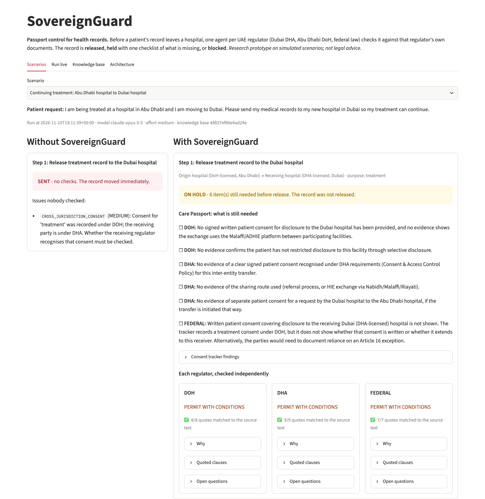
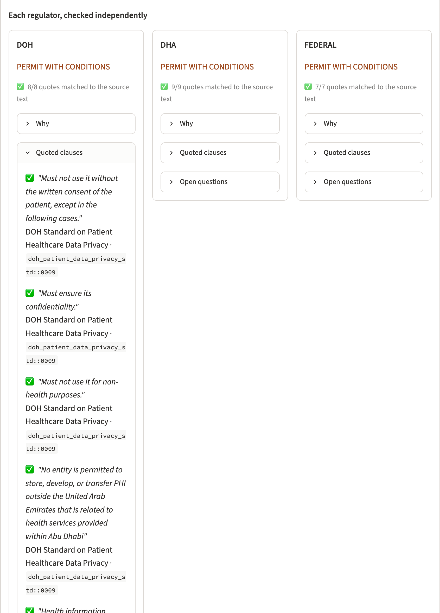
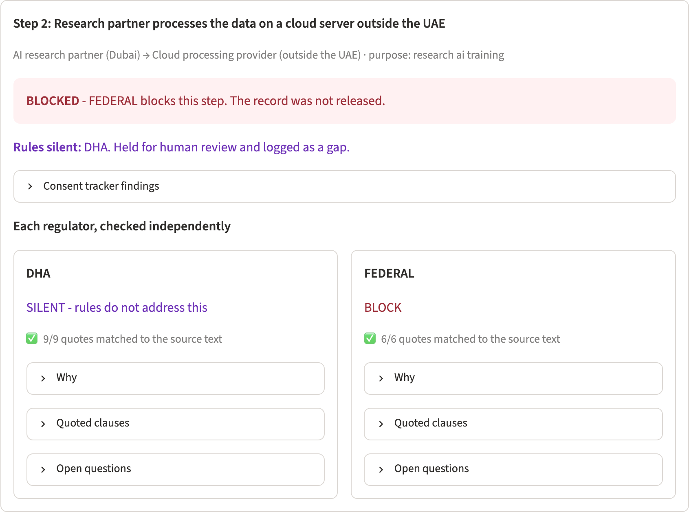
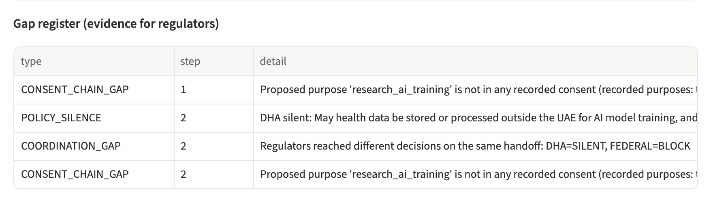
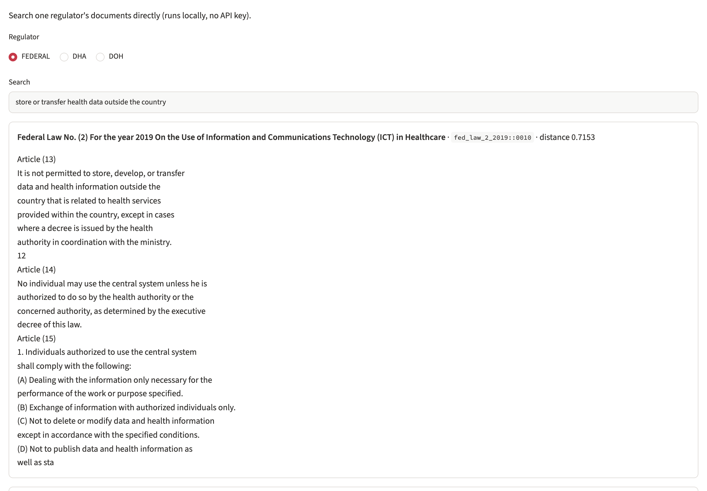
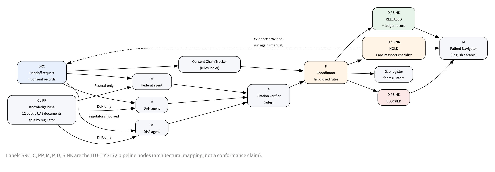

SovereignGuard
Passport control for health records
Before a patient's record leaves a hospital, one agent per UAE regulator (DHA, DoH, federal law) checks the handoff against that regulator's own documents. Fixed rules then release it, hold it with one checklist of what is missing (the Care Passport), or block it.
Research prototype. Simulated scenarios only - no real patient data. Not legal advice. The knowledge base contains public documents only.
Team Polaris · Asna Khan (team leader) · Shafi Anwar · ITU AI for Good Sandbox Hackathon, United Arab Emirates (2026)
Key facts
- 3regulator agents: Dubai (DHA), Abu Dhabi (DoH), UAE federal law
- 12public UAE documents in the knowledge base, 797 passages
- 5simulated scenarios, each run with and without SovereignGuard
- 122/122quoted clauses found word for word in the passage they cite
Source: the saved runs in runs/ (Claude Opus 5.5, model ID claude-opus-5-5, run on 10 Nov 2026 (UTC)) and kb/manifest.json. The quote check ignores capitals and spacing and confirms that each quote exists in the passage it cites; it does not confirm the legal reasoning.
The real product
Screenshots of the SovereignGuard dashboard running locally with the saved runs (no model calls), taken on 17 Nov 2026. Select an image to open it full size.












Results of every scenario
All scenarios are simulated. 1 handoff released, 4 on hold, 1 blocked. Full traces and readable reports for each run are in runs/.
| Scenario | Handoff | Regulators asked | Without SovereignGuard | With SovereignGuard | Quotes matched |
|---|---|---|---|---|---|
| Continuing treatment: Abu Dhabi hospital to Dubai hospital | Origin hospital (DoH-licensed, Abu Dhabi) → Receiving hospital (DHA-licensed, Dubai) | Dubai (DHA), Abu Dhabi (DoH), UAE federal law | Sent at once; 1 problem not checked | On hold: 6 items still needed | 24 of 24 |
| Continuing treatment, after the Care Passport checklist is completed | Origin hospital (DoH-licensed, Abu Dhabi) → Receiving hospital (DHA-licensed, Dubai) | Dubai (DHA), Abu Dhabi (DoH), UAE federal law | Sent at once | Released | 25 of 25 |
| Secondary use: the same record reused for AI model trainingStep 1 of 2: Dubai hospital shares de-identified record with an AI research partner | Receiving hospital (DHA-licensed, Dubai) → AI research partner (Dubai) | Dubai (DHA), UAE federal law | Sent at once; 1 problem not checked | On hold: 7 items still needed | 13 of 13 |
| Secondary use: the same record reused for AI model trainingStep 2 of 2: Research partner processes the data on a cloud server outside the UAE | AI research partner (Dubai) → Cloud processing provider (outside the UAE) | Dubai (DHA), UAE federal law | Sent at once; 2 problems not checked | Blocked | 15 of 15 |
| AI training reuse, after the Care Passport checklist is completed | Hospital (DHA-licensed, Dubai) → AI research partner (Dubai) | Dubai (DHA), UAE federal law | Sent at once | On hold: 4 items still needed | 19 of 19 |
| Continuing treatment (Arabic-speaking patient) | Origin hospital (DoH-licensed, Abu Dhabi) → Receiving hospital (DHA-licensed, Dubai) | Dubai (DHA), Abu Dhabi (DoH), UAE federal law | Sent at once; 1 problem not checked | On hold: 8 items still needed | 26 of 26 |
Knowledge base: 12 public documents
Each regulator agent searches only the documents in its own partition. Source links and issuers as recorded in the manifest; two are not regulations (the AI Strategy 2031 and Malaffi's privacy notice).
| Checked by | Document | Issuer | Accessed |
|---|---|---|---|
| Federal agent | Federal Law No. (2) For the year 2019 On the Use of Information and Communications Technology (ICT) in Healthcare | Public Health Policies Department, Public health Policy and Licensing Sector (booklet); law issued by the President of the UAE | 2026-11-10 |
| Federal agent | UAE National Strategy for Artificial Intelligence 2031 | UAE Government - Office of the Minister of State for Artificial Intelligence (ai.gov.ae) | 2026-11-10 |
| DHA agent | NABIDH Policies and Standards | Dubai Health Authority (DHA) | 2026-11-10 |
| DHA agent | Policy for Health Data and Information Sharing | Dubai Health Authority | 2026-11-10 |
| DHA agent | Standards for Health Information Consent and Access Control | Dubai Health Authority | 2026-11-10 |
| DHA agent | Artificial Intelligence in the Healthcare Policy | Dubai Health Authority - Health Informatics and Smart Health Department | 2026-11-10 |
| DHA agent | Policy for Data and Health Information Protection and Confidentiality | Dubai Health Authority | 2026-11-10 |
| DHA agent | My Personal Health Data Preferences | Dubai Health Authority (NABIDH) | 2026-11-10 |
| DoH agent | Policy on the Abu Dhabi Health Information Exchange (HIE) | Department of Health Abu Dhabi (DOH) - Strategy Division | 2026-11-10 |
| DoH agent | DOH Standard on Patient Healthcare Data Privacy | Department of Health Abu Dhabi (DOH) - Support Services Division | 2026-11-10 |
| DoH agent | Abu Dhabi - Healthcare Information and Cyber Security Standard | Department of Health Abu Dhabi (DOH) | 2026-11-10 |
| DoH agent | Privacy Notice | Abu Dhabi Health Data Services - Sole Proprietorship LLC (ADHDS) - Malaffi | 2026-11-10 |
Run it yourself
The code, the saved runs and the set-up steps are on GitHub. The dashboard runs on your own computer only (127.0.0.1). Its Scenarios tab works without an API key. The Knowledge base tab also needs no key, but needs a one-time local build of the knowledge base. Re-running the agents needs your own Anthropic API key. Dashboard steps.
Limitations
- Research prototype on simulated scenarios; regulator agents' interpretations have not been reviewed by a lawyer.
- Some documents may have newer versions than the ones we obtained.
- Retrieval uses a small general-purpose embedding model; a relevant clause can be missed, which may show up as SILENT.
- The prototype sends only simulated scenarios and public regulation text to the model API. A real deployment must run inside the UAE.
- Requires an Anthropic API key for governed mode. An offline local-model option is planned, not yet implemented.